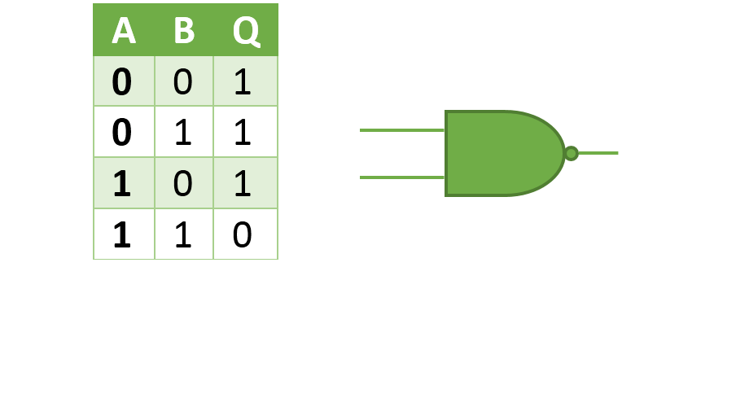

Las computadoras digitales utilizan el sistema de números binarios, que tiene dos dígitos 0 y 1. Un dígito binario se denomina un bit. La información está representada en las computadoras digitales en grupos de bits. Utilizando diversas técnicas de codificación los grupos de bits pueden hacerse que representen no solamente números binarios sino también otros símbolos discretos cualesquiera, tales como dígitos decimales o letras de alfabeto. Utilizando arreglos binarios y diversas técnicas de codificación, los dígitos binarios o grupos de bits pueden utilizarse para desarrollar conjuntos completos de instrucciones para realizar diversos tipos de cálculos.
La información binaria se representa en un sistema digital por cantidades físicas denominadas señales, Las señales eléctricas tales como voltajes existen a través del sistema digital en cualquiera de dos valores reconocibles y representan una variable binaria igual a 1 o 0. Por ejemplo, un sistema digital particular puede emplear una señal de 3 volts para representar el binario "1" y 0.5 volts para el binario "0". La siguiente ilustración muestra un ejemplo de una señal binaria.
Como se muestra en la figura, cada valor binario tiene una desviación aceptable del valor nominal. La región intermedia entre las dos regiones permitidas se cruza solamente durante la transición de estado. Los terminales de entrada de un circuito digital aceptan señales binarias dentro de las tolerancias permitidas y los circuitos responden en los terminales de salida con señales binarias que caen dentro de las tolerancias permitidas.
La lógica binaria tiene que ver con variables binarias y con operaciones que toman un sentido lógico. La manipulación de información binaria se hace por circuitos lógicos que se denominan Compuertas.
Las compuertas son bloques del hardware que producen señales en binario 1 ó 0 cuando se satisfacen los requisitos de entrada lógica. Las diversas compuertas lógicas se encuentran comúnmente en sistemas de computadoras digitales. Cada compuerta tiene un símbolo gráfico diferente y su operación puede describirse por medio de una función algebraica. Las relaciones entrada - salida de las variables binarias para cada compuerta pueden representarse en forma tabular en una tabla de verdad.
Compuerta AND:
Cada compuerta tiene dos variables de entrada designadas por A y B y una salida binaria designada por x. La compuerta AND produce la multiplicación lógica AND: esto es: la salida es 1 si la entrada A y la entrada B están ambas en el binario 1: de otra manera, la salida es 0. Estas condiciones también son especificadas en la tabla de verdad para la compuerta AND. La tabla muestra que la salida x es 1 solamente cuando ambas entradas A y B están en 1. El símbolo de operación algebraico de la función AND es el mismo que el símbolo de la multiplicación de la aritmética ordinaria (*). Las compuertas AND pueden tener más de dos entradas y por definición, la salida es 1 si todas las entradas son 1.
Compuerta OR:
La compuerta OR produce la función sumadora, esto es, la salida es 1 si la entrada A o la entrada B o ambas entradas son 1; de otra manera, la salida es 0. El símbolo algebraico de la función OR (+), es igual a la operación de aritmética de suma. Las compuertas OR pueden tener más de dos entradas y por definición la salida es 1 si cualquier entrada es 1.
Compuerta NOT:
La compuerta OR produce la función sumadora, esto es, la salida es 1 si la entrada A o la entrada B o ambas entradas son 1; de otra manera, la salida es 0. El símbolo algebraico de la función OR (+), es igual a la operación de aritmética de suma. Las compuertas OR pueden tener más de dos entradas y por definición la salida es 1 si cualquier entrada es 1.
Compuerta NAND:

Es el complemento de la función AND, como se indica por el símbolo gráfico, que consiste en una compuerta AND seguida por un pequeño círculo (quiere decir que invierte la señal). La designación NAND se deriva de la abreviación NOT - AND. Una designación más adecuada habría sido AND invertido puesto que es la función AND la que se ha invertido. Las compuertas NAND pueden tener más de dos entradas, y la salida es siempre el complemento de la función AND.
Compuerta NOR:
Es el complemento de la función AND, como se indica por el símbolo gráfico, que consiste en una compuerta AND seguida por un pequeño círculo (quiere decir que invierte la señal). La designación NAND se deriva de la abreviación NOT - AND. Una designación más adecuada habría sido AND invertido puesto que es la función AND la que se ha invertido. Las compuertas NAND pueden tener más de dos entradas, y la salida es siempre el complemento de la función AND.
Compuerta XOR:
La puerta XOR, compuerta XOR u OR exclusiva es una puerta lógica digital que implementa el o exclusivo; es decir, una salida verdadera (1/HIGH) resulta si una, y solo una de las entradas a la puerta es verdadera. Si ambas entradas son falsas (0/LOW) o ambas son verdaderas, resulta en una salida falsa. La XOR representa la función de la desigualdad, es decir, la salida es verdadera si las entradas no son iguales, de otro modo el resultado es falso. Una manera de recordar XOR es "uno o el otro, pero no ambos".
Las tecnologias TTL y CMOS
Familia logica TTL
La familia lógica-transistor-transistor se desarrolló usando interruptores a transistor para las operaciones lógicas, y define los valores binarios como:
0 V a 0,8 V = lógica 0
2 V a 5 V = lógica 1
La familia TTL es la mas grande de los circuitos integrados (ICs), pero la familia CMOS está creciendo rapidamente. No son caros, pero consumen mucha energía y deben alimentarse con +5 voltios. Las puertas individuales, puden consumir de 3 a 4 mA.
Las versiones Schottky de bajo consumo de chips TTL, solo consumen un 20% de energía pero son mas caras. Los números de piezas de estos chips llevan LS en el centro de su nomenclatura.
Familia logica CMOS
La familia CMOS (complementary metal oxide semiconductor), contiene la mayor parte de los equivalentes chips TTL. Los chips CMOS tienen mucha menor necesidad de energía (consumen sobre 1 mA) y operan con un gran rango de voltajes de alimentación (normalmente de 3 a 18 voltios). La nomenclatura del modelo CMOS llevan una C en el centro de su numeración, por ejemplo el 74C04 es el CMOS equivalente del TTL 7404. Un gran inconveniente es la extrema sensibilidad a la electricidad estática -se deben proteger cuidadosamente contra las descargas de electricidad estática-.
Designaciones de Componente
Los circuitos integrados de la familia lógica TTL, tienen una designación de pieza formada por un número de cuatro a cinco dígitos. Con la incorporación de otros tipos de construcciones de dispositivos, se añadieron letras al centro de la numeración, para recordar al usuario que no se está utilizando el chip básico TTL. Los números de dispositivos que empiezan con un prefijo corresponden a su serie, seguida por otro número que identifica el chip individual.
7400 La designación TTL .
74C00 El equivalente CMOS.
74LS00 La implementación del Schottky de bajo consumo.